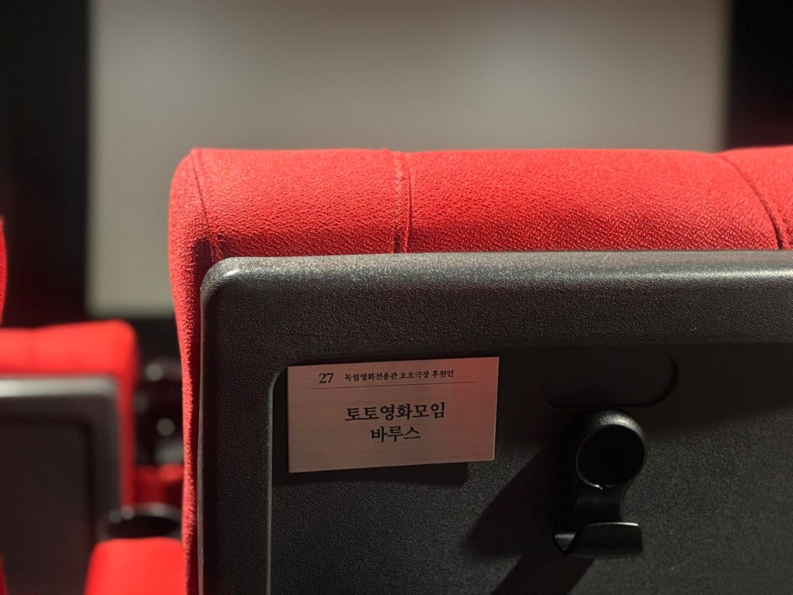

<!DOCTYPE html>
<html lang="ko">
<head>
  <meta charset="UTF-8" />
  <meta name="viewport" content="width=device-width, initial-scale=1.0" />
  <script src="js/site-root.js"></script>
  <meta name="ti-nav-current" content="seat-sponsor.html" />
  <title>좌석후원 — 테스트 UI · 55CINE</title>
  <link rel="icon" href="favicon.ico" sizes="48x48 32x32 16x16" />
  <link rel="shortcut icon" href="favicon.ico" type="image/x-icon" />
  <link rel="stylesheet" href="components/site-common.css" />
  <link rel="stylesheet" href="css/components/section-page-head.css" />
  <link rel="stylesheet" href="css/fonts.css" />
  <link rel="stylesheet" href="css/fonts-display.css" />
  <link rel="stylesheet" href="css/shell.css" />
  <link rel="stylesheet" href="css/components/shell-mobile-menu.css" />
  <link rel="stylesheet" href="css/components/shell-scroll-top.css" />
  <link rel="stylesheet" href="css/site-footer.css" />
  <link rel="stylesheet" href="css/base/utilities.css" />
  <link rel="stylesheet" href="css/page-shell.css" />
  <link rel="stylesheet" href="css/seat-sponsor.css" />
  <link rel="stylesheet" href="css/components/theater-page-head.css" />
  <link rel="stylesheet" href="css/components/theater-page-body.css" />
</head>
<body class="ti">
  <div class="shell" id="tiShell">
    <div class="left">
      <div data-ti-mobile-menu-bar></div>
      <div class="left-panel" id="tiLeftPanel">
        <div class="left-gnb-mount" data-ti-left-gnb></div>
      </div>
      <footer
        class="footer footer--slot-pc site-footer"
        data-ti-site-footer
        data-ti-asset-base=""
        aria-label="사이트 정보"
      ></footer>
    </div>
    <aside class="right sub-page" aria-label="좌석후원 본문">
      <div class="sub-scroll">
        <header class="section-page-head">
          <h1 id="seat-sponsor-title" class="section-page-head__title">
            <span class="section-page-head__parent">오오극장</span><span class="section-page-head__sep" aria-hidden="true">·</span><span class="section-page-head__child">좌석후원</span>
          </h1>
          <div class="section-page-head__rule" role="presentation"></div>
          <nav class="section-page-subnav" aria-label="오오극장 하위 메뉴">
            <a href="theater-info.html">소개</a>
            <a href="viewing-guide.html">관람 안내</a>
            <a href="membership.html">멤버십</a>
            <a href="seat-sponsor.html" class="is-current" aria-current="page">좌석후원</a>
            <a href="daegwan.html">대관</a>
            <a href="osinneun-gil.html">오시는 길</a>
          </nav>
        </header>

        <article id="seat-sponsor" aria-labelledby="seat-sponsor-title">
          <figure class="seat-photo">
            
          </figure>

          <section class="seat-intro">
            <h2 class="seat-intro__title">오오극장 10년+ 후원 캠페인</h2>
            <p class="seat-intro__lead">좌석의 주인공을 찾습니다!</p>
            <p class="seat-intro__text">
              대구의 독립영화를 지켜온 오오극장에 당신의 응원을 남겨주세요.
              좌석을 후원하시면, 그 자리에 후원인의 이름을 새겨드립니다.
            </p>
            <p class="seat-intro__text">
              영원히 남을 이름, 영화를 사랑한 당신의 흔적이 됩니다.
            </p>
            <p class="seat-intro__cta">
              지금 좌석의 주인공이 되어주세요.
              오오극장의 내일은 당신의 이름으로 시작됩니다.
            </p>
          </section>

          <section class="seat-card" aria-labelledby="seat-guide-heading">
            <h2 class="seat-card__heading" id="seat-guide-heading">후원 안내</h2>
            <ul class="seat-list">
              <li>후원 금액 : 1좌석 당 55만원</li>
              <li>후원 좌석 : 오오극장 내 좌석 번호 지정</li>
              <li>후원 단위 : 개인, 단체 후원 모두 가능</li>
            </ul>
            <div class="seat-callout" role="note" aria-label="멤버십 회원 후원 시 추가 혜택">
              <p class="seat-callout__head">멤버십 회원 후원 시 추가 혜택</p>
              <div class="seat-callout__rule" role="presentation"></div>
              <p class="seat-callout__body">
                오오극장 멤버십 회원이 좌석을 후원하시면 20% 할인!<br>
                <span class="seat-price"><s>55만원</s> → 44만원</span>
                으로 후원 가능합니다.
              </p>
            </div>
          </section>

          <section class="seat-card" aria-labelledby="seat-benefit-heading">
            <h2 class="seat-card__heading" id="seat-benefit-heading">후원 혜택</h2>
            <ul class="seat-list">
              <li>후원 좌석에 후원인 명패 부착</li>
              <li>기부금 영수증 발급</li>
              <li>초대권 20장 증정 또는 대관 1회(2시간) 무료</li>
              <li>굿즈 패키지 증정 [리사이클링백 + 키링 + 후원증서]</li>
            </ul>
          </section>

          <section class="seat-link-wrap" aria-labelledby="seat-link-heading">
            <h2 class="seat-card__heading" id="seat-link-heading">좌석 후원</h2>
            <a href="#" class="seat-link">후원하기</a>
          </section>
        </article>
      </div>
    </aside>
    <footer
      class="footer footer--slot-mobile site-footer"
      data-ti-site-footer
      data-ti-asset-base=""
      aria-label="사이트 정보"
    ></footer>
  </div>
  <script src="js/site-footer-include.js"></script>
  <!-- TI_ASSET_BASE: js/site-root.js -->
    <script src="js/api/client.js"></script>
<script src="data/week-schedule-data.js"></script>
  <script src="js/left-gnb-include.js"></script>
  <script src="js/mobile-menu.js"></script>
  <script src="js/scroll-top.js"></script>
  <script src="js/week-schedule.js"></script>
</body>
</html>
